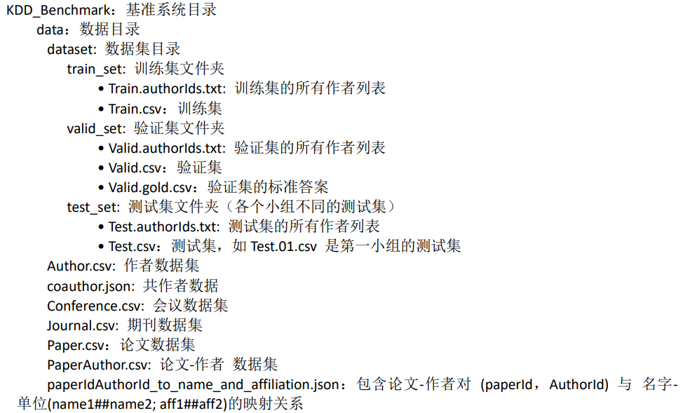
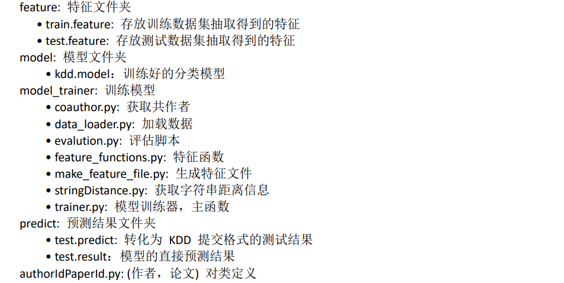
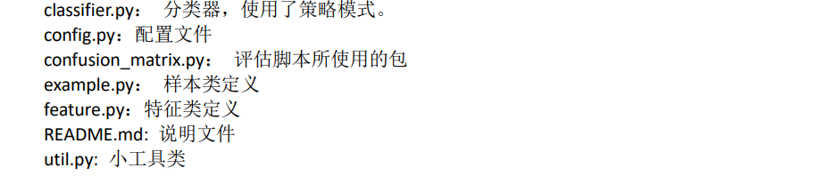
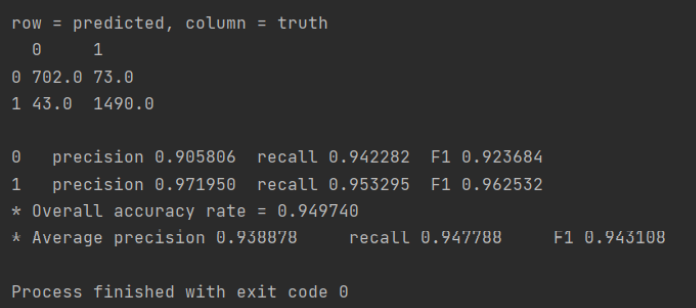

KDD竞赛基准系统
实验任务
给定作者 ID 和论文 ID，判断该作者是否写了这篇论文。
目录介绍



数据集描述
- 作者数据集 :
Author.csv。包含作者的编号（Id），名字（Name），单位（affiliation） 信息。相同 的作者可能在Author.csv数据集中出现多次，因为作者在不同会议／期刊上发表论文的名字可 能有多个版本。例如：J. Doe, Jane Doe, 和 J. A. Doe 指的均是同一个人。此外，Affiliation 信息可能为空。
| 字段名称 | 数据类型 | 注释 |
|---|---|---|
| Id | int | 作者编号 |
| Name | string | 作者名称 |
| Affiliation | string | 隶属单位 |
- 论文数据集 :
Paper.csv。包含论文的标题(title)，会议／期刊信息, 关键字(keywords)。 同一论文可 能会通过不同的数据来源获取，因此在Paper.csv中会存在多个副本。此外， Keyword 信息可能为空。
| 字段名称 | 数据类型 | 注释 |
|---|---|---|
| Id | int | 论文编号 |
| Title | string | 论文标题 |
| Year | int | 论文年份 |
| ConferenceId | int | 论文发表的会议Id |
| JournalId | int | 论文发表的期刊Id |
| Keywords | string | 论文关键字 |
- (论文-作者)数据集 :
PaperAuthor.csv。包含 (论文 Id-作者 Id)对 的信息。该数据集包含 噪声 (noisy)，即存在不正确的(论文 Id-作者 Id)对，意味着PaperAuthor.csv包含的(论 文 Id-作者 Id) 对 中的作者 Id 并不一定写了该论文 Id。这是因为，作者名字存在歧义， 可能存在同名的不 同人或作者名字有多个版本（如上面的例子：J. Doe, Jane Doe 和 J. A. Doe 指的均是同一个人）。 此外，Affiliation 信息可能为空。
| 字段名称 | 数据类型 | 注释 |
|---|---|---|
| PaperId | int | 论文编号 |
| AuthorId | int | 作者编号 |
| Name | string | 作者名称 |
| Affiliation | string | 隶属单位 |
- 会议和期刊数据集 ：
Conference.csv, Journal.csv。每篇论文发表在会议或者期刊上。
| 字段名称 | 数据类型 | 注释 |
|---|---|---|
| Id | int | 会议/期刊编号 |
| ShortName | string | 简称 |
| Fullname | string | 全称 |
| Homepage | string | 主页 |
共同作者的信息：
coauthor.json。该文件内容是从PaperAuthor.csv中抽取出来共同作者的信息， 该文件的生成可以通过运行model_trainer下的coauthor.py。coauthor.json文件的内容格式形如： {“A 作者 ID”: {“B1 作者 ID”: 合作次数, “B2 作者 ID”: 合作次数}} 第一层的 key 为作者的 ID，对应的 value 为共同作者信息（同样为 key-value 形式，key 为 共 同作者的 ID，value 为合作次数）。目前，
coauthor.json文件给出每个作者合作频率最高的 10 个共同作者，该文件的格式为 json。 可以通过修改coauthor.py中get_top_k_coauthors (paper_author_path, k, to_file)方法中 的 k 值 来获取最高的 k 个共同作者，即 top k：1
2k = 10
get_top_k_coauthors(os.path.join(config.DATASET_PATH,"PaperAuthor.csv"), k, os.path.join(config.DATA_PATH, "coauthor.json"))例 如 ， 获 取 作 者 ID 为 ‘742736’ 的 共 同 作 者 信 息 ， 可 以 通 过 以 下 代 码 获 取 ， coauthor[“742736”] 值对应的是 ID 为 ‘742736’ 作者的共同作者信息。u’823230’: 3 表 示 ID 为 ‘742736’ 的作者 与 ID 为 ‘823230’ 的作者共合作过 3 次：
1
2
3>>>import json
coauthor = json.load(open("coauthour.json"))
coauthor["742736"] {u'823230': 3, u'647433': 3, u'1691202': 3, u'891164': 3, u'1910552': 3, u'607259': 3, u'2182818': 7, u'1355775': 4, u'2097154': 3, u'1108518': 3}论文&作者 pair 字符串信息 ：
paperIdAuthorId_to_name_and_affiliation.json。该文件内容是从Paper-Author.csv提取的，该文件可以通过运行model_trainer文件夹下的stringDistance.py来获取。将
Paper-Author.csv中相同的论文 ID 和作者 ID 对的 name 和 affiliation 合并，文件内容为 key-value 形式， key 为 论 文 ID 和作者 ID 对 ： ‘paperid|authorid’, value 为 {“name”: “name1##name2##name3”, “affiliation”: “aff1##aff2##aff3”}。 {“A 作者 ID”: {“B1 作者 ID”: 合作次 数, “B2 作者 ID”: 合作次数}}例如，获取 ID 为 ‘1156615’ 的论文和 ID 为 ‘2085584’ 的作者 name 和 affiliation 信息：
1
2
3
4import json
pa_name_aff = json.load(open("paperIdAuthorId_to_name_and_affiliation.json"))
pa_name_aff['1156615|2085584']
{u'affiliation': u'Huawei##Microsoft Research Asia', u'name': u'Hang Li##Hang Li'}训 练 集 ：
Train.csv。 ComfirmedPaperIds 列 对 应 的 表 示 该 作 者 写 了 这 些 论 文 的 列 表 ， DeletedPaperIds 列对应的表示该作者没有写这些论文论文。
| 字段名称 | 数据类型 | 注释 |
|---|---|---|
| AuthorId | int | 作者ID |
| ComfirmedPaperIds | string | 以空格分割的论文列表 |
| DeletedPaperIds | string | 以空格分割的论文列表 |
- 验证集 ：
Valid.csv文件的格式如下：
| 字段名称 | 数据类型 | 注释 |
|---|---|---|
| AuthorId | int | 作者ID |
| PaperIds | string | 以空格分割的论文列表，待测的论文列表 |
测试集 ：
Test.csv。测试集Test.csv文件的格式与验证集Valid.csv格式相同。数据集的统计：
| 数据集 | （作者-论文）对个数 |
|---|---|
| 训练集 | 11263 |
| 验证集 | 2347 |
| 测试集 | 1300 |
实现思路
- 根据任务的目标，从给定的数据集合中构造出训练正负样本/测试样本；
- 从给定的数据集合中，对构造出的训练样本/测试样本进行特征的设计和抽取，并针对每个训练样本/测试样本生成相应的特征集合；
- 选择分类算法，在训练样本生成的特征集合上构造分类器；
- 使用分类器对测试样本的特征集合进行预测，并将分类器的预测结果转换为任务要求的提交格式。
具体实现
构造训练/测试的正负样本
- 构建训练样本。 系统从
data/dataset/train_set/Train.csv中构建训练集的正负样本。- 将 authorId 与 ConfirmedPaperIds 中的每个 paperId 组合，作为正样本（label 为 1）；
- 将 authorId 与 DeletedPaperIds 中的每个 paperId 组合，作为负样本（label 为 0）。
- 构建测试样本。系统从
data/dataset/valid_set/Valid.csv或data/dataset/test_set/Test.csv中构建测试样本。 由于测试集的类标是待预测的，这里直接将其赋值为 -1。
- 构建训练样本。 系统从
构造特征
分 别 为 每 一 个 训 练 ／ 测 试 样 本 设 计 并 抽 取 特 征 。 特 征 抽 取 函 数 位 于
model_trainer/feature_functions.py中。目前基准系统实现的特征有：
共作者特征（共作者的相似度特征）
一篇论文会存在多个作者，根据
PaperAuthor.csv统计每一个作者的 top 10（也可以是 top 20 或者其他 top K）的共作者 coauthor（本系统从PaperAuthor.csv获取了每个作 者 top 10 的 共作者，保存在coauthor.json文件中。）。对于一个作者论文对（aid，pid）， 计算 PaperId 为 pid 的论文作者是否出现在 AuthorId 为 aid 的作者的 top 10 coauthor 中。有两种计算方式：- 计算 PaperId 为 pid 的论文的作者在 AuthorId 为 aid 的作者的 top 10 coauthor 中出现的 人（个）数，作为一个特征。
- 计算 PaperId 为 pid 的论文的作者，与在 AuthorId 为 aid 的作者的 top 10 coauthor 中的 作者的合作次数进行累加，将累加后的次数作为一个特征。
字符串距离特征（计算作者名字和单位相似度特征）
假设当前的作者论文对是(aid,pid), 从
paperIdAuthorId_to_name_and_affiliation.json里得到 的 name 串和 affiliation 串分别为 name1##name2##name3, aff1##aff2##aff3, 根据 aid 从Author.csv表找到的 name 和 affliction 分别为 name-a，affliction-a，这样 我们可以计算字符串的距离。特征计算方式有两种：
- 计算 name-a 与,name1##name2##name3 的距离；类似地，计算 affliction-a 和,aff1##aff2##aff3 的距离。
- 分别计算 name-a 与 name1，name2 和 name3 的各自距离，然后对这三个距 离取平 均；类似地，计算 affliction-a 和,aff1，aff2，aff3 的平均距离。
距离（相似度）的度量实现以下四种：
- 编辑距离
- 最长公共子序列（LCS）
- 最长公共子串（LSS）
- 余弦相似度
作者 aid 之前发表的论文的 journal 和 conference，与当前的论文 pid 的 journal 和 conference 之间的相似度。
论文的 keyword 相似度
作者 A 写过的论文的 keyword 构成一个集合 X，一篇论文 B 的 keyword 构成一个集合 Y， 这里 的 keyword 指的是论文的 title 和 keyword 分词后得到的单词，对于一个作者论文对（A， B） 计算他们的 keyword 的交集或者相似度：X∩Y。 每个单词可以计算类似于 tf-idf 的分数， 最后 把属于 X∩Y 的单词的分数累加起来作为一维特征。
分类器选择
每一种分类器，对应于一个类（class），目前系统实现的分类器有：
- Decision Tree
- Naive Bayes
- KNN
- SVM
- Logister Regreation
- Random Forest
- AdaBoost
- VotingClassifier
数据预处理
主要是数据清洗和集成。
实验结果
经过多次实验，发现用了 boost 思想的 adaboost，和 bagging 思想的 vote 准确率是最高的。

代码地址：